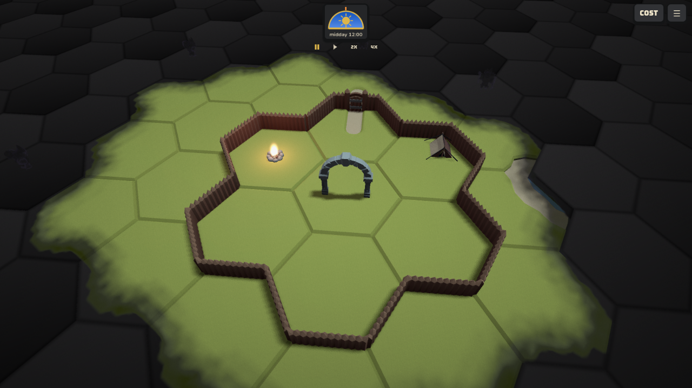
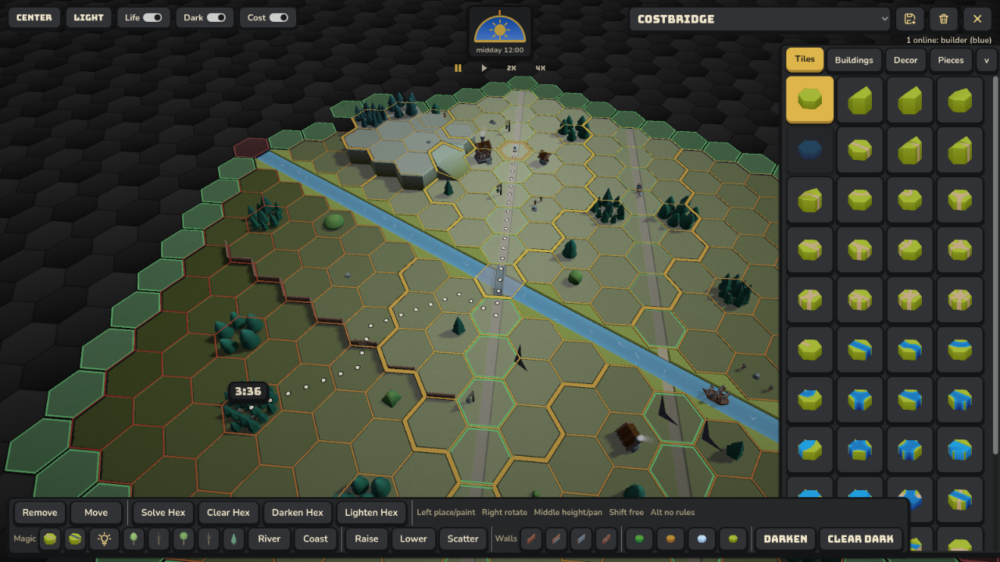

Urmond, Limburg · active prototype
A camp at the edge of the dark.
Uermend is a Godot/C# multiplayer hex-world settlement builder. A camp grows from a portal, one lit hex at a time, while darkness waits beyond the reach of the fires.

Light is a mechanic, not an effect.
The settlement begins behind a wall, gathered around a portal and a campfire. Light makes a place available: it opens ground to work and gives the world a readable edge.
The name is Limburgish for Urmond, the Maas village where the game is made. Its older record as Overmunthe — a refuge above the meeting waters — gives the project a quiet historical anchor: old stone and ivory, river blue, and the warm gold of a light kept alive after dusk.
Build from the edge of what you can see.
The prototype is a readable workbench: place a tile, follow the roads and rivers, inspect the walk, then decide what deserves the next circle of light.


The current shape.
Uermend is being rebuilt one confirmed step at a time. The Play route is not the finished game yet; the sandbox is the way in.
- Status
- Step 0 in progress
- Client
- Godot 4.7 · C#
- Rooms
- ASP.NET Core server
- Rules
- Engine-free shared C#